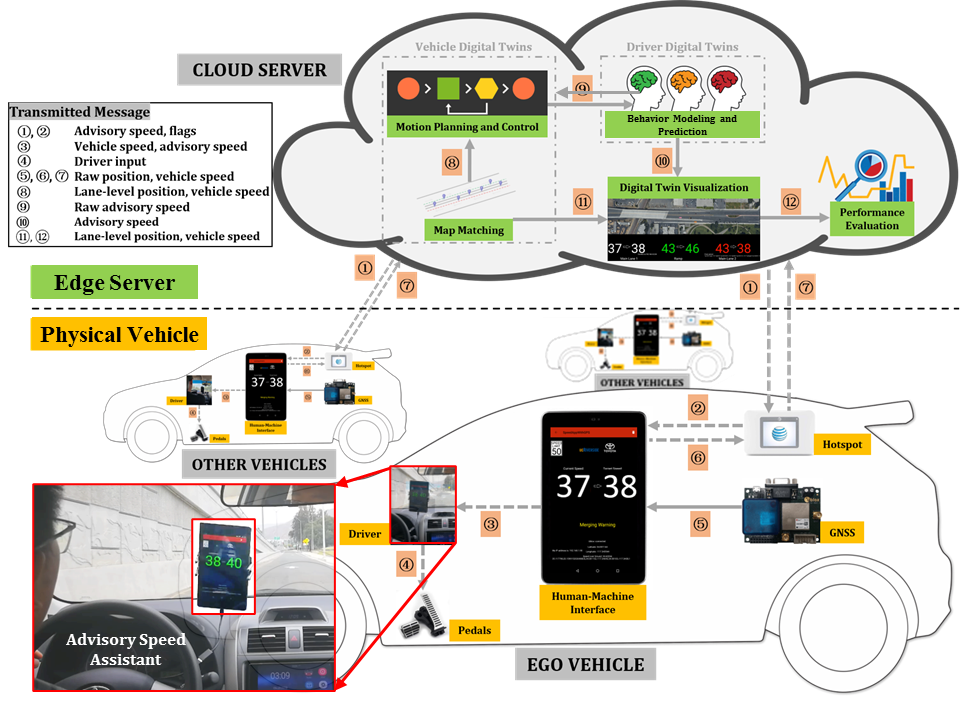

Cyber-Physical Mobility System: Vehicle Digital Twin

Vehicle-to-cloud architecture for cooperative ramp merging, demonstrated with three passenger vehicles.
Project Overview
This cooperative ramp merging system uses vehicle-to-cloud communication to coordinate connected vehicles before they reach a merging zone. On-board devices send observations over a 4G/LTE network; cloud-based vehicle and driver models process the data and return driving advice.
The system was implemented with three passenger vehicles in Riverside, California. Field experiments compared operation with and without advisory information, including communication delay, safety, and environmental performance.